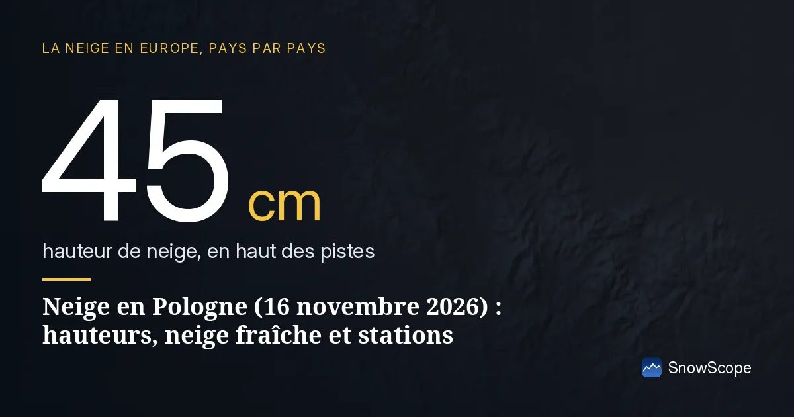

Neige en Pologne (16 novembre 2026) : hauteurs, neige fraîche et stations
La neige couvre environ 1 170 km² en Pologne ce 16 novembre, 910 km² de moins qu'hier. Environ 11 % des montagnes et collines cartographiées du pays sont couvertes.
Consultez les prévisions neige en temps réel pour Orlické Záhoří sur l'application SnowScopeHauteurs de neige, alertes poudreuse et carte 3D, gratuitement.
Quelle part du pays est blanche
Par rapport aux 960 km² d'il y a sept jours, c'est 210 km² de plus. Sous 1 000 m environ, les pentes sont surtout vertes ou brunes.
| Station | Hauteur de neige | Neige fraîche, 72 h | Attendu, jours suivants | Sommet |
|---|---|---|---|---|
| Orlické Záhoří | 45 cm | 0 cm | 4 cm | 1 022 m |
| COS Szczyrk | 34 cm | 0 cm | 1 cm | 1 244 m |
| Karpacz | 32 cm | 1 cm | 11 cm | 1 350 m |
| Stok Karpatka | 22 cm | 1 cm | 5 cm | – |
| Kasprowy Wierch | 20 cm | 1 cm | 10 cm | 1 958 m |

Des vallées aux sommets
Épaisseur moyenne du manteau par tranche d'altitude : 500-1 000 m : en moyenne moins de 1 cm (6 % du sol blanc); 1 000-1 500 m : en moyenne 3 cm (73 % du sol blanc); 1 500-2 000 m : en moyenne 13 cm (100 % du sol blanc).
Neige fraîche
Presque pas de neige fraîche ces trois derniers jours : le maximum sur trois jours est de 0 cm.
Ce que cela donne sur les pistes
La douceur grignote la couverture : neige dure le matin, soupe l'après-midi.
Surveillez les prévisions : la neige à venir peut vite changer la donne.
Les prochains jours
Sur les trois prochains jours, jusqu'à 6 cm sont attendus, et jusqu'à 15 cm sur la semaine.
Le mardi 17 novembre se détache, avec jusqu'à 5 cm en une journée.
Plus loin, les jours 8 à 14 montrent jusqu'à 29 cm sur les pentes les plus enneigées.
La sélection pour le week-end
Orlické Záhoří est en tête avec 45 cm sur le haut du domaine.
Juste derrière : COS Szczyrk (34 cm), Karpacz (32 cm), Stok Karpatka (22 cm) et Kasprowy Wierch (20 cm).
Orlické Záhoří n'a pas eu de neige fraîche en trois jours ; 4 cm pourraient tomber d'ici jeudi 19 novembre.
COS Szczyrk n'a pas eu de neige fraîche en trois jours ; 1 cm pourraient tomber d'ici jeudi 19 novembre.
42 des 114 stations suivies en Pologne ont de la neige sur le haut du domaine.
Conseils aux skieurs
- Neige fraîche sur base froide : prudence dans les pentes raides.
- Après une nuit claire, la neige est dure le matin : attendez le soleil sur les faces sud.
- Au-dessus de la forêt, la neige peut être ventée : attention aux crêtes.
À propos de ces chiffres
Les hauteurs de neige des stations sont la neige la plus épaisse sur le haut du domaine à la date indiquée ; ce sont des estimations pour une zone, pas une mesure en un point. Les prévisions peuvent changer. Consultez toujours le bulletin d'avalanche officiel avant le hors-piste.
Citer ce bulletin
Pour la recherche, l'enseignement ou la presse : chiffres et graphiques réutilisables librement sous CC BY 4.0 avec cette citation.
SnowScope (2026), Neige en Pologne (16 novembre 2026) : hauteurs, neige fraîche et stations, https://snowscope.app/blog/fr/2026/11/poland-snow-report-16-november-2026.html, consulté le 2026-11-16
SnowScope (Atlas Labs). (2026, November 16). Neige en Pologne (16 novembre 2026) : hauteurs, neige fraîche et stations. SnowScope snow reports. https://snowscope.app/blog/fr/2026/11/poland-snow-report-16-november-2026.html
BibTeX
@misc{snowscope2026polandsnowreport16novemb,
author = {{SnowScope (Atlas Labs)}},
title = {Neige en Pologne (16 novembre 2026) : hauteurs, neige fraîche et stations},
year = {2026},
month = nov,
howpublished = {\url{https://snowscope.app/blog/fr/2026/11/poland-snow-report-16-november-2026.html}},
note = {Published 2026-11-16 20:42 UTC; accessed 2026-11-16}
}· CC BY 4.0 · Méthodes, données et outils →
Orlické Záhoří : neige et température selon l'altitude, cet hiver vs l'hiver dernier (outils) →
Suivre Orlické Záhoří
Gratuit : un message quand la neige arrive, et la météo chaque matin.